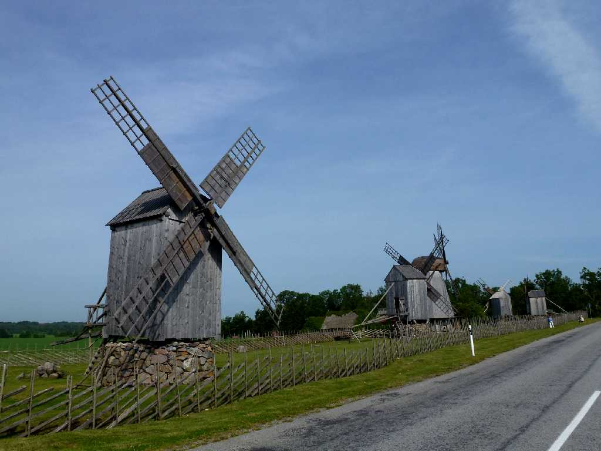
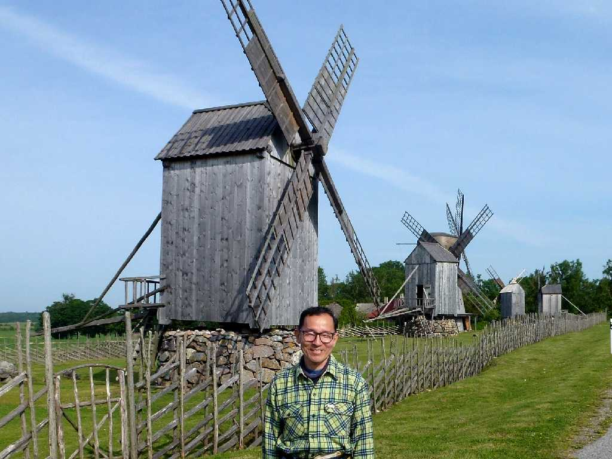

Angla Tuulikud Saaremaa Island
サーレマー島の アングラ風車群は１８８０年頃から創られ始めた木造の粉挽き風車で２０世紀初頭には８００基ほどあったが現在５基が保存されている

July 1 2012 Angla Tuulikud
中央丸屋根の風車は新しいオランダ式で屋根部分のみが風向きの方向に回転するが昔ながらの他の４基は風車小屋全体が風向きの方向に回転するエストニア式である